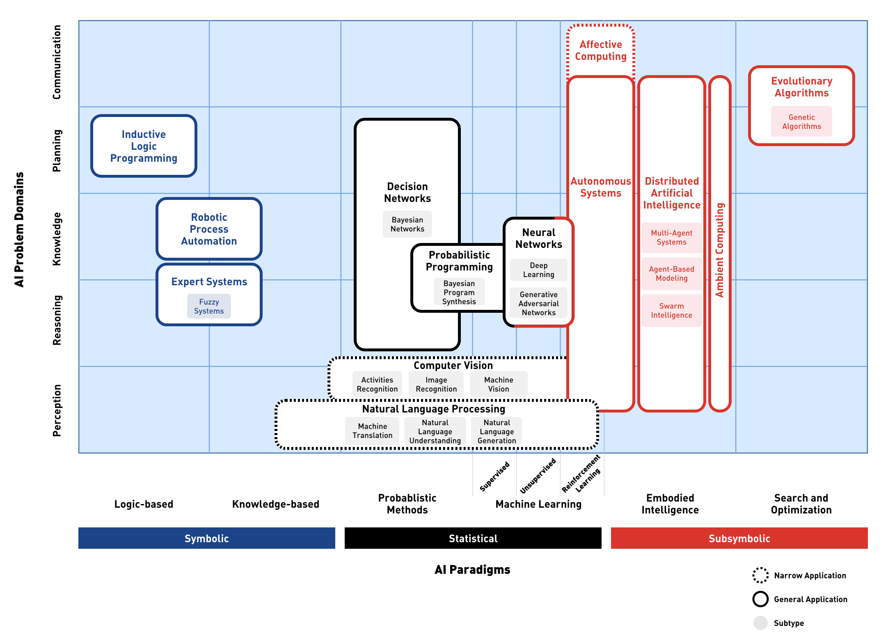

Preface¶

Prerequisites¶
Before starting this module make sure you have:
Purpose of this course¶
The general learning outcome of this course is:
The student is able to perform a well-defined task independently in a relatively clearly arranged situation, or is able to perform in a complex and unpredictable situation under supervision.
This course will provide you with an introduction to deep learning (DL) algorithms and their applications for intelligent systems and devices. The focus will be mainly on experimenting and testing with several DL systems in order to understand their basic functioning.
For a successful completion of the course, a student has:
examined the concept of Artificial Intelligence and its relationships with all relevant related paradigms
conducted experiments with various applications for AI (Vision, Audio, Language)
designed a demo or prototype for an AI application
Structure of the course¶
Through the whole of the program you’ll be cooperating within a team where on different aassigments. At the end of the course you will present with your team what you have learned from analyzing and comparing the different case studies.
About the author¶

Witek ten Hove is a senior instructor and researcher at HAN University of Applied Sciences. His main areas of expertise are Data en Web Technologies.
Through his extensive business experience in Finance and International Trade and thorough knowledge of modern data technologies, he is able to make connections between technology and business. As an open source evangelist he firmly believe in the power of knowledge sharing. His mission is to inspire business professionals and help them exploit the full potential of smart technologies.
He is the owner of Ten Hove Business Data Solutions, a consultancy and training company helping organizations to achieve maximum business value through data driven solutions.